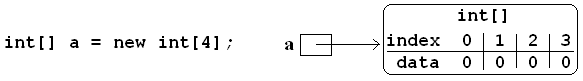
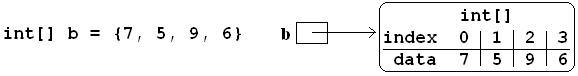
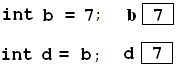
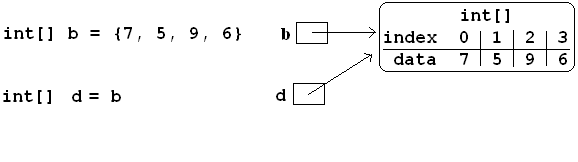

One Dimensional Arrays#
Basic Syntax#
A string is an immutable sequence of characters. Arrays provide more general sequences, with the same indexing notation, but with free choice of the type of the items in the sequence, and the ability to change the elements in the sequence.
For example, if we want the type for an array with int elements, it is int[].
In general for any element type, the type for an array of the element type is
type
[]
so
int[] a;
declares a to refer to an array containing int elements. You do not
know how many elements will be allowed in this array from this declaration.
We must give further information to create the corresponding array object.
A new object can be created using the new syntax. An array must get a definite
length, which can be a literal integer or any integer expression. For example
int[] a;
a = new int[4];
or combined with the declaration,
int[] a = new int[4];
creates an array that holds 4 integers. The elements of the array must get initial values. Numerical arrays get initialized to all 0’s with this syntax.
For a variety of reasons, including bookkeeping by the compiler, the actual data for
an array is not stored directly in the memory location allocated by the declaration.
The array could have any number of items, and hence the memory requirements are not known
at compile time. Like all other object (as opposed to primitive) types,
what is actually stored at the memory location declared for a is a reference to the
actual place where the data for the array is stored.
In actual compiler implementation this reference is an address in memory.
In diagrams we will illustrate object references with an arrow pointing to the actual
location for the object’s data. For example after a is initialized:
{kind=link}

The small box beside a is meant to indicate the memory space allocated when a is
declared. As you can see that space does not actually contain the array, but only a
reference to the array, pointing to the actual sequence of data for the array.
To make it easy to refer to the elements in the diagram, we also label the indices
associated with each element, though they are not actual a part of what is stored in memory.
The general syntax to create a new array is
newtype[length]
After the type, there are square brackets enclosing an expression for the length of the array - this length is unchangeable after creation.
The elements inside an array can to referenced with the same index notation used earlier for strings.
a[2]
refers to the element at index 2 (third element because of 0 based indexing).
Unlike with strings, this element can not only be read, but also be assigned to:
a[0] = 7;
a[1] = 5;
a[2] = 9;
a[3] = 6;
These four assignment statements would replace the original 0 values for each element in the array.
This is a verbose way to specify all array values. An array with the same final data could be created with the single declaration:
int[] b = {7, 5, 9, 6};
{kind=link}

The list in braces ONLY is allowed as an initialization of a variable in a declaration, not in a later assignment statement. Technically it is an initializer, not an array literal.
Individual array elements can both be used in expressions, and be assigned to. Continuing with the earlier example code:
a[2] = 4*a[1] - a[3];
a[2] now equals 4*5 - 6 = 14.
Arrays, like strings, have a Length property:
Console.WriteLine(b.Length); // prints 4
Just as we saw that using a variable for an index was useful with
strings, in practice array elements are almost always referred to with an index
variable. A very common pattern is to deal with each element in sequence,
and the syntax is the same as for a string. Print all elements of array b:
for (int i= 0; i < b.Length, i++) {
Console.WriteLine(b[i]);
}
You could also use while syntax. The foreach syntax would be:
foreach( int x in b) {
Console.WriteLine(x);
}
The int type for x matches the element type of the array b.
The shorter foreach syntax is not as general as the for syntax.
For example, to print only the first 3 elements of b:
for(int i= 0; i < 3; i++) {
Console.WriteLine(b[i]);
}
but the foreach syntax would not work, since it must process all elements.
Also use the for syntax to assign new values to the array elements,
rather than just use the values in expressions:
for(int i= 0; i < b.Length; i++) {
b[i] = 5*i;
}
Now the array b of our earlier examples (of length 4) would contain 0, 5,
10, and 15.
Warning
There is no analog of changing the value of b[i] with a
foreach loop. To change values in an array, we must
assign to each location in the array by index.
A foreach loop only provides the value of each sequence element
for us to read.
We have had the array indices so far be given by a single symbol,
which is the most common case in practice, but in fact what appears
inside the square braces can be any int expression.
Like parentheses, square brackets delimit
the inside expression, which gets evaluated first, before the array value is
looked up. Consider this csharp sequence:
csharp> int[] a = {5, 9, 15, -4};
csharp> int i = 2;
csharp> a[i];
15
This should be clear. Now think first, what should a[i+1] be?
…
csharp> a[i+1];
-4
In steps: a[i+1] is a[2+1] is a[3] is -4. Be careful,
a[i+1] is NOT a[i] + 1 (which would be 16).
The code above to print each element of an array performs a
unified and possibly useful operation, so it would make sense to
encapsulate it into a function. A function can take any type as a
parameter, so an array type is perfectly reasonable! Above we
printed each element of an array of integers. This time let’s choose strings,
so the formal parameter is an array of strings: string[].
1/// Print the strings in data, one per line.
2public static void PrintStrings(string[] data)
3{
4 foreach( string s in data) {
5 Console.WriteLine(s);
6 }
7}
With this definition, the code fragment
string[] hamlet = {"To be", "or not", "to be!"};
PrintStrings(hamlet);
would print:
To be
or not
to be!
Here we are just reading the data from the array parameter. We will see that there are more wrinkles to array parameters in References and Aliases.
An array type can also be returned like any other type. Examine the function definition:
/// Return an array with string data obtained from the user.
/// The length of the array and the number of entries to
/// prompt the user for is n.
public static string[] InputNStrings(int n)
{
string[] lines = new string[n];
Console.WriteLine ("Enter {0} string(s).", n);
for (int i = 0; i < n; i++) {
lines[i] = UI.PromptLine("next string: ");
}
return lines;
}
This code follows a standard pattern for functions returning an array:
In order to return an array, we must first create a new array with the
newsyntax. We must set the proper length (nhere).And we are not done with one line of creation: Since the array has multiple parts, we need a loop to assign all the values. We have a simple
forloop to assign to each element in turn.Finally we must return the array that we created!
Follow Array Loop Exercise/Example#
What is printed by this program? Play computer first to figure out.
1using System; 2 3class ArrayLoop1 4{ //Play computer on this code and then test 5 public static void Main() 6 { 7 int[] a = {1, 2, 3}, b = {7, 2, 3, 5}, 8 c = {7, 0, 3, 2, 5}; 9 Console.WriteLine(foo(a, b, 2)); 10 Console.WriteLine(foo(c, b, 4)); 11 } 12 13 static int foo(int[] x, int[] y, int n) 14 { 15 int k = 0; 16 for (int i = 0; i < n; i++) 17 if (x[i] == y[i]) { 18 k++; 19 } 20 return k; 21 } 22}
Then you can run example LoyolaChicagoBooks/introcs-csharp-examples to check the results and see our table from playing computer included in the project, LoyolaChicagoBooks/introcs-csharp-examples.
What is printed by this program? Play computer first to figure out. Be careful to keep the data current!
1using System; 2 3class ArrayLoop2 4{ //Play computer on this code first and then test 5 public static void Main() 6 { 7 int[] a = {5, 7, 6, 9, 8}; 8 for (int i = 0; i < 3; i++) { 9 a[i+2] = a[i]; 10 } 11 foreach (int x in a) { 12 Console.Write(x); 13 } 14 Console.WriteLine(); 15 } 16}
Then you can run example LoyolaChicagoBooks/introcs-csharp-examples to check the results and see our table from playing computer included in the project, LoyolaChicagoBooks/introcs-csharp-examples.
What is printed by this program? Play computer first to figure out.
1using System; 2 3class ArrayLoop3 4{ //Play computer on this code first and then test 5 public static void Main() 6 { 7 string[] strArray = {"abcdefgh", "wxyz"}; 8 for (int i = 2; i < 4; i++) { 9 foreach(string s in strArray) { 10 Console.Write(s.Substring(s.Length/i) + "/"); 11 } 12 Console.WriteLine(); 13 } 14 } 15}
Then you can run example LoyolaChicagoBooks/introcs-csharp-examples to check the results and see our table from playing computer included in the project, LoyolaChicagoBooks/introcs-csharp-examples.
Sign Array Exercise/Example#
Complete the code for this function:
/// Return an array contqining the sign (1, -1 or 0)
/// of each element of x.
/// For example if x contains elements 2, -5, 0, 7,
/// then return a new array containing 1, -1, 0, 1.
static int[] Signs1(int[] x)
and place it in a program with a main function that demonstrates it.
You can compare your solution with ours in LoyolaChicagoBooks/introcs-csharp-examples.
Parameters to Main#
The Main function may take an array of strings as parameter, as in example
LoyolaChicagoBooks/introcs-csharp-examples:
/// Demonstrate the use of command line parameters.
static void Main(string[] args)
{
Console.WriteLine("There are {0} command line parameters.", args.Length);
foreach(string s in args) {
Console.WriteLine(s);
}
}
By convention, the formal parameter for Main is called args,
short for arguments.
Compile and run the program from the command line. Run it again with some things at the end of the line like:
mono print_param.exe hi there 123
This should print for you:
There are 3 command line parameters.
hi
there
123
See what quoted strings do. Use command line parameters (with the quotes)
"hi there" 123.
This should print for you:
There are 2 command line parameters.
hi there
123
You can simulate command line parameters inside Xamarin Studio:
Open the local popup menu for the project you are using.
Select Run With >
In the submenu select Custom Parameters.
That brings up a dialog where you can enter the desired command line parameters.
Optionally you can remember this setup by clicking on box in front of “Save this configuration as a custom execution mode”. If you check it, you get a place to enter a Custom Mode Name.
End up clicking the Execute button.
If you set a Custom Mode, later when you get to the submenu after “Run With >”, you will see your custom mode name to select!
Try it!
An alternative when you want to use command line parameters repeatedly is
Use Xamarin Studio for editing and compiling. To compile but not run, the command is Build rather than Run.
Meanwhile keep a console/terminal window open in the
Debugdirectory, and enter execution commands there, including the command line parameters actually on the command line! Even if you have a long set of parameters, you can easily run your program multiple times with the same parameters by just pressing the up arrow key in the terminal when you see the next command line prompt, taking you back to the previous command (or keep going back several commands). This is also convenient if you want to slightly edit the parameters: you can edit a line that you redisplay from your command history.Do not close this window until you are done with your session of executing from the command line. By using the same terminal window, you also save the history of all your runs. You can scroll the window up to see past executions.
If one run leads you to go back and fix a bug, go back to step one to build the program again, and continue executing in the same terminal window.
Modified Parameter Print Exercise#
Modify a copy of LoyolaChicagoBooks/introcs-csharp-examples to contain the earlier example function PrintStrings, and call it.
Command Line Adder Exercise#
Write a program adder.cs that calculates and prints the sum of
command line parameters, so if you make the command line parameters
in Xamarin Studio be
2 5 22
then the program prints 29.
Do try running from the command line: If you compiled with Xamarin Studio, that means going down to the bin/Debug directory. Recall Xamarin Studio for Windows produces a Windows executable, not a Mono file, so you can run
adder 2 5 22
but on a Mac you need to run with mono:
mono adder.exe 2 5 22
String Method Split#
A string method producing an array:
string[] Split(charseparator)Returns an array of substrings from this string. They are the pieces left after chopping out the separator character from the string. A piece may be the empty string. Example:
csharp> var fruitString = "apple pear banana"; csharp> string[] fruit = fruitString.Split(' '); csharp> fruit; { "apple", "pear", "banana" } csharp> fruit[1]; "pear" csharp> var s = " extra spaces "; csharp> s.Split(' '); { "", "", "extra", "", "", "spaces", "" }
Note: The response with the list in braces is a purely csharp convention for displaying
sequences for the user. There is no corresponding string displayed by C# Write commands.
Also see that the string is split at each separator,
even if that produces empty strings.
Split is useful for parsing a line with several parts. You might get a group of
integers on a line of text, for instance from:
string input = UI.PromptLine(
"Please enter some integers, separated by single spaces: ");
To extract the numbers, you want to the separate the entries in the string
with Split, and you probably want further processing:
If you want them as integers, not strings, you must convert each one separately.
It is useful to put this idea in a function.
See the type returned. It is an array int[] for the int results:
/// Return ints taken from space separated integers in a string.
public static int[] IntsFromString1(string input)
{
string[] integers = input.Split(' ');
int[] data = new int[integers.Length];
for (int i=0; i < data.Length; i++)
data[i] = int.Parse(integers[i]);
return data;
}
In a call to IntsFromString1("2 5 22"), integers would be
an array containing strings "2", "5", and "22".
We need the conversions to int to go in a new array that we call data.
We must set its length, which will clearly be the same as for integers,
integers.Length.
To assign elements into data we need a loop providing indices,
like the for loop provided. Then for each index, we parse a
string in integers into an int,
and place the int in the corresponding location in data. We need to return
data at the end to make it accessible to the caller.
Again we use the basic pattern for returning an array.
Dealing with arrays is hard for many students for several reasons:
You have new array declaration and creation syntax.
Array are compound objects, so there is a lot to think about.
Loops are hard for many people, and you almost always deal with loops.
You usually must deal with index variables, and there are many patterns.
The last point is significant, so it is important to note the special pattern in the example above:
Note
The use of the same index variable for more than one array is a standard way to have related entries in corresponding positions in the arrays.
We will introduce a refinement of this function in the IntsFromString Exercise. It will rely on a more complicated index-handling pattern.
NewUpper Exercise#
Complete the definition for
/// Return an array that is the same as data
/// except all strings are in upper case.
public static string[] NewUpper(string[] data)
and write a Main driver to demonstrate it. Use the example function
PrintStrings in your demonstration.
References and Aliases#
Object variables, like arrays, are references, and this has important implications for assignment.
With a primitive type like an int, an assignment copies the data:
{kind=link}

In the diagram, the contents of the memory box labeled b is copied to the
memory box labeled d. The value of d starts off equal to the value of b,
but can later be changed independently.
Contrast an assignment with arrays. The value that is copied is the reference, not the array data itself, so both end up pointing at the same actual array:
{kind=link}

Hereafter, array assignments like:
b[2] = -10;
d[1] = 55;
would both change the same array. Now b and d are essentially
names for the same thing (the actual array). The technical term matches English:
The names are aliases.
This may seem like a pretty silly discussion. Why bother to give two different names to the same object? Isn’t one enough? In fact it is very important in function/method calls. An array reference can be passed as an actual value, and it is the array reference that is copied to the formal parameter, so the formal parameter name is an alias for the actual parameter name.
Note
If an array passed as a parameter to a method has elements changed in the method, then the change affects the actual parameter array. The change remains in the actual parameter array after the method has terminated.
For example, consider the following function:
// Modify a by multiplying all elements by multiplier.
static void Scale(int[] a, int multiplier)
{
for (int i = 0; i < a.Length; i++) {
a[i] *= multiplier; // or: a[i] = a[i] * multiplier
}
}
The fragment:
int[] nums = {2, 4, 1};
Scale(nums, 5);
would change nums, so it ends up containing elements 10, 20, and 5.
AllToUpper Exercise#
Complete the function with this heading:
/// Modifiy the array data so
/// all strings are in upper case.
public static void AllToUpper(string[] data)
Write a Main method to demonstrate it. Use the example function
PrintStrings to show off your result.
Sign Array II Exercise/Example#
Create a variation on Sign Array Exercise/Example with a function with heading
/// Mutate array x, replacing each element by
/// its sign (1, -1 or 0)
/// For example if array a contains elements 2, -5, 0, 7,
/// then after the call Signs2(a), a contains 1, -1, 0, 1.
static void Signs2(int[] x)
and a main function to demonstrate it.
You can compare your solution with ours in LoyolaChicagoBooks/introcs-csharp-examples.
Anonymous Array Initialization#
Sometimes you only want to use an array with specific values as a parameter to a function. You could write something like
int[] temp = {3, 1, 7};
SomeFunc(temp);
but if temp is never going to be referenced again, you can
do this without using a name:
SomeFunc(new int[] {3, 1, 7});
Like with the use of var, the compiler can infer the type of the array, and the
last example could be shortened to
SomeFunc(new[] {3, 1, 7});
It is essential to include the new int[] or new[]
in addition to the {3, 1, 7}.
Such an approach could also be used if you want to return a fixed length array, where you have values for each parts, as in:
int minVal = ...
int maxVal = ...
// ...
return new[] {minVal, maxVal};
Testing NewUpper Exercise/Example#
Elaborate NewUpper Exercise so your Main method calls
NewUpper with an anonymous array as part of the demonstration.
You can see our code for all the string array exercises in example project
LoyolaChicagoBooks/introcs-csharp-examples, and with the Main
demonstration method in LoyolaChicagoBooks/introcs-csharp-examples.
Default Initializations#
Did you notice that when the first example array of integers was created, it was filled with zeros? It is a safety feature of C# that the internal fields of objects always get a specific value, not random data. Here are the defaults:
Type |
Value |
|---|---|
primitive numeric types |
0 |
bool |
false |
all object types |
null |
Warning
An array with elements of object type, like string[],
without a specific initializer,
gets initialized to all null values. The creation is totally
legal, but if you try to use the created value, like
string[] words = new string[10];
Console.WriteLine(words[0].Length); // run time error here
The error is because null is not an object - it does not have a Length
property. If, for example,
you want an array of empty strings you would need to initialize it with
a loop:
string[] words = new string[10];
for (int i = 0; i < words.Length; i++) {
words[i] = "";
}
Array Examples and Exercises#
We have been using array index variables all though this chapter.
We have been getting you started in situations where
they all just advanced continually in a
for loop heading. The fanciest situations have been where the same index
is used to reference more than one array in parallel.
Now that you have some experience, this section will include a variety of exercises where array index variables need to be manipulated in fancier ways. Consider this heading:
/// Return a new array with all the 0's that are in
/// data removed. If data contains 0, 3, 0, 0, 5, 9
/// then an array containing 3, 5, 9 is returned.
public static int[] NoZeros(int[] data)
We have a starting array data and we need to create an ending array,
but the corresponding nonzero data is not
at corresponding index values in data!
Since we are returning a new array, we need to create it, and for that
we need a length. How would you do that by hand?
Go through the original array, look at individual elements, and count the nonzero
ones. We can do a counting loop Say we put our count into the variable
countNonZero. Then create a new int array, say notzero, with the
proper length.
The next part is new. Clearly we need to get non-zero values from the original array
data and put them in the other array, notzero.
As we said, the array indices are
not in sync. That means we are going to need to deal with their indices
separately: The index in data is not going to relate directly to the
index in notzero.
We could just have a separate index variable for each array.
Think about data:
We do want to go through it sequentially, and we are only reading the
sequential values, so we can actually use a foreach loop and not
keep track of that index directly at all!
On the other hand we need to assign values into notzero, and hence we will
need to refer to an index variable for notzero,
say i.
However, we cannot just assign the index values in a
for loop heading as we have been before!
We have to be more careful and think when and how does i change?
This might be a good place to do this by hand, for instance with the sample
data in the function documentation. Keep track of what i
should be as you iterate through the elements of data, one step at a time:
How do you change
i and when? You are encouraged to stop and actually do this manually,
on paper, and think before going on….
You should see that:
We start by being ready to fill the place at index 0 in
notzero.We only copy a non-zero element of
data, so we need anifstatement in the body again.Each such non-zero number is placed after the last number we copied into
notzero.This means that each time we copy an element to
notzerowe advancei!
If you get those ideas together, hopefully you can write the needed code. Our version is:
1/// Return a new array with all the 0's that are in
2/// data removed. If data contains 0, 3, 0, 0, 5, 9
3/// then an array containing 3, 5, 9 is returned.
4public static int[] NoZeros(int[] data)
5{
6 int countNonZero = 0;
7 foreach (int n in data) { //find new length
8 if (n != 0) {
9 countNonZero++;
10 }
11 }
12 int[] notzero = new int[countNonZero];
13 int i = 0; // index where to put the next value
14 foreach(int n in data) {
15 if (n != 0) { // copy non-zero elements
16 notzero[i] = n;
17 i++;
18 }
19 }
20 return notzero;
21}
Adding a Main demostration method, you get our full example
LoyolaChicagoBooks/introcs-csharp-examples.
Initialization Exercise#
In the
NoZerosfunction above, what are the values in the arraynotzerojust after line 12 is executed?In the NewUpper Exercise or our version of
NewUpperin LoyolaChicagoBooks/introcs-csharp-examples consider the execution of theNewUpperfunction immediately after you first create the string array that you are going to later return. Right then, what are the element values in that array?
ExtractItems Exercise#
A string intended to indicate a sequence of items could be like in the
discussion above of IntsFromString1.
As illustrated there, individual items
are separated out neatly with Split. If you want to act on a user-generated
string, it is probably better to allow more leeway:
Commas are often used to separate items or comma with blank, or several blanks.
In this exercise write a version that will accept all those variations and return an array of non-empty strings, without the commas or blanks. Complete this function:
/// Return an array of non-empty strings that are separated
/// in the original string by any combination of commas and blanks.
/// Example: ExtractItems(" extra spaces,plus, more, ") returns an
/// array containing {"extra", "spaces", "plus", "more"}
public static string[] ExtractItems(string s)
Hints: It is possible to deal with more than one separator character, but
the simplest thing likely is to use string method Replace
and just replace all the
commas by spaces. If you then Split on each space you get all the non-empty
strings that you want and maybe a number of
empty strings. You need to create a final array with just the nonempty
strings from the split. When you create the array to be returned,
you need know its size. Then populate it
with just the nonempty string pieces.
Handling the indices for the new array also adds complication.
IntsFromString Exercise#
Write a function
IntsFromString with a corresponding signature and intent
like IntsFromString1, but make it
more robust by allowing all the separator combinations of
ExtractItems from the last exercise, so
IntsFromString(" 2, 33 4,55 6 77 ") returns an array containing int
values 2, 33, 4, 55, 6, 77. (Don’t reinvent the wheel: call ExtractItems.)
Also write a Main function so you can demonstrate the use of
IntsFromString.
Trim All Exercise#
Write a program trimmer.cs that includes and tests a
function with heading:
// Trim all elements of a and replace them in the array.
// Example: If a contains {" is ", " it", "trimmed? "}
// then after the function call the array contains
// {"is", "it", "trimmed?"}.
static void TrimAll(string[] a)
Count Duplicates Exercise#
Write a program count_dups.cs that includes and tests a
function with heading:
// Return the number of duplicate pairs in an array a.
// Example: for elements 2, 5, 1, 5, 2, 5
// the return value would be 4 (one pair of 2's three pairs of 5's.
public static int dups(int[] a)
Mirror Array Exercise#
Write a program make_mirror.cs that includes and tests a
function with heading:
// Create a new array with the elements of a in the opposite order.
// {"aA", "bB", "cC"} produces a new array {"cC", "bB", "aA"}
public static string[] Mirror(string[] a)
Reverse Array Exercise#
Write a program reverse_array.cs that includes and tests a
function with heading:
// Reverse the order of array elements
// If array a first contains "aA", "bB", "cC",
// than it ends up containing "cC", "bB", "aA".
public static void Reverse(string[] a)
Do this without creating a second array. (There is a trick here.)
Histogram Exercise#
Write a program make_histogram.cs that includes and tests a
function with heading:
// Return a histogram array counting repetitions of values
// start through end in array a. The count for value start+i
// is at index i of the returned array, starting at i == 0.
// For example:
// Histogram(new int[]{2, 0, 3, 5, 3, 5}, 2, 5) counts how
// many times the numbers 2 through 5, inclusive, occur in
// the original array, and returns a new array containing
// {1, 2, 0, 2}, that is, 1 2, 2 3's, 0 4's, and 2 5's. The
// count of 2's appears as the first (0th) element of the
// returned array, the count of 3's as the second, etc.
// Similarly, Histogram(new int[]{2, 0, 3, 5, 3, 5}, -1, 1)
// returns the new array {0, 1, 0},
// that is, 0 -1's, 1 0, and 0 1's.
public static int[] Histogram(int[] a, int start, int end)
This problem clearly requires you to loop through all the elements of
array a. You should not need any further nested loop.
Histogram Interval Exercise#
This is a slight elaboration of the previous problem, where you count entries in intervals, not just of width 1.
Write a program make_histogram2.cs that includes and tests a
function with heading:
// Return a histogram array counting repetitions of values
// in array a in the n half-open intervals [start, start + width),
// [start+width, start+2*width), ... [
// [start + (n-1)*width, start + n*width) . The counts for
// each of the n intervals, in order, goes in the returned array
// of length n. For example
// Histogram(new[]{89, 69, 100, 83, 99, 81}, 60, 10, 5)
// would return an array containing counts 1, 0, 3, 1, 1,
// for 1 in sixties, 0 in seventies, 3 in eighties, 1 in nineties,
// and 1 in range 100 through 109.
public static int[] HistogramIntervals(int[] a, int start,
int width, int n)
The previous exercise version Histogram(a, start, end)
would return the same
result as HistogramIntervals(a, start, 1, end-start+1).
Again, the only loop needed should be to process each element of a.
Power Table Exercise 2#
Write a program power_table2.cs` producing a table much
like Power Table Exercise, with right-justified columns,
but this time make each separate column have the minimum width
necessary - so there is a single space (and no less)
in front of some entry in
each column, except the first.
Be careful: take the heading widths into account; the
parameter limits are important, too; test them:
/// Print a table of powers of positive integers.
/// Assume 1 <= nMax <= 14, 1 <= powerMax <= 10
/// Example: output of PowerTable(4, 5)
/// n^1 n^2 n^3 n^4 n^5
/// 1 1 1 1 1
/// 2 4 8 16 32
/// 3 9 27 81 243
/// 4 16 64 256 1024
public static void PowerTable(int nMax, int powerMax)